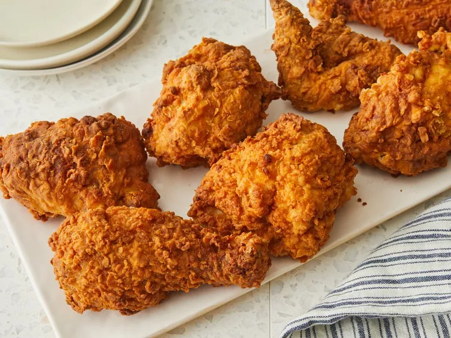

Buttermilk Fried Chicken

Buttermilk fried chicken that's incredibly tender, with tangy buttermilk
After the buttermilk soak,
dregde the chicken pieces in seasoned flour
and fry them in hot oil until crisp and golden.
Ingredients
- 1 (3 1/2) pound chicken, cut into 8 pieces
- 1 teaspoon black pepper
- 1 teaspoon salt
- 1 teaspoon paprika
- 1/2 teaspoon white pepper
- 1/4 teaspoon dried rosemary
- 1/4 teaspoon ground thyme
- 1/4 teaspoon dried oregano
- 1/4 teaspoon dried sage
- 1/4 teaspoon cayenne pepper
- 2 cups buttermilk
Seasoned Flour:
- 2 cups flour
- 1 teaspoon salt
- 1/2 teaspoon paprika
- 1/2 teaspoon cayenne pepper
- 1/2 teaspoon garlic powder
- 1/2 teaspoon white pepper
- 1/2 teaspoon onion powder
- 2 1/2 quarts peanut oil for frying
Steps
- Toss chicken pieces, black pepper, salt,
paprika, white pepper, rosemary, thyme,
oregano, sage, and cayenne together in a large bowl.
-
Stir in buttermilk until chicken is evenly
coated. Cover and refrigerate for 6 hours.
-
Combine flour, salt, paprika, cayenne,
garlic powder, white pepper, and onion powder in
a large shallow dish.
-
Remove chicken from buttermilk and
dredge each piece in seasoned flour;shake
off any excess and transfer to a plate.
-
Heat peanut oil in a large Dutch oven to 350
degrees F (175 degrees C).
-
Add chicken pieces to the hot oil and fry for
10 minutes. Turn chicken pieces and fry for
another 10 to 15 minutes. An instant-read
thermometer inserted near the bone
should read 165 degrees F (74 degrees C).
-
Transfer fried chicken to a cooling rack set
over a paper towel-lined baking sheet. Let
sit for 10 minutes before serving.
Return to home page